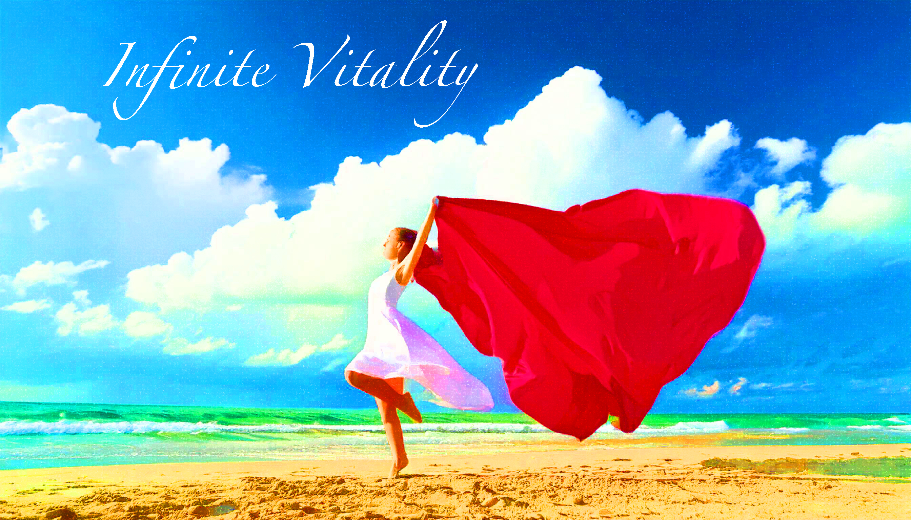

Biodynamic Acupuncture
A holistic integration of Traditional Chinese Medicine, hands-on Craniosacral Therapy, and Qi Gong. We amplify and direct your own vitality to restore balance on a structural and energetic level.
Experience holistic embodied medicine that combines Eastern and Western traditions to relieve pain and nurture true vitality.


We possess an innate ability to live a life of peace, harmony, and vibrant expression. My work is dedicated to relieving the root causes of pain and discomfort while nurturing overall health.
I practice holistic embodied medicine, harmonizing Eastern and Western traditions. The modalities I use—Acupuncture, Craniosacral Therapy, and Structural Integration—work together to guide patients toward profound personal transformation.
A holistic integration of Traditional Chinese Medicine, hands-on Craniosacral Therapy, and Qi Gong. We amplify and direct your own vitality to restore balance on a structural and energetic level.

A gentle, hands-on treatment focusing on the fluids surrounding the brain and spinal cord. We emphasize the body's inherent healing intelligence to unblock tides and meridians without physical needles.

A 12-session bodywork protocol focusing on fascia. Using deep pressure and precise movements, we realign your musculoskeletal system with gravity to relieve chronic pain and improve posture.

Sessions designed to relieve pain from acute injuries and chronic imbalances. Utilizing Tui-na, Thai bodywork, and myofascial release to optimize your body's overall physiology.
Infinite Vitality
Dr. William E. Leigh III
1423 34th Ave, Suite B
Seattle, WA 98122